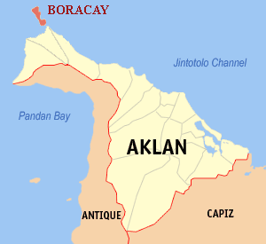

Boracay
Boracay is an obviously popular tourist resort. Who could resist buying a flight to this beautiful vacation destination with its stunning surroundings and crystal blue beaches? Even Filipinos from different regions of the country, as well as foreigners from all over the world, can't get enough of its splendor.
Location
Boracay Island is located 0.8 kilometers (0.50 mi) northwest of Panay Island and is part of the Philippines' Western Visayas area, or Region VI. It's located 50 kilometers (31 miles) northwest of Kalibo, 150 kilometers (93 miles) northwest of Iloilo City, and 200 nautical miles (370 kilometers) southeast of Manila. The island is around seven kilometers long, dog-bone shaped, and has a total land area of 10.32 square kilometers (3.98 sq mi).
